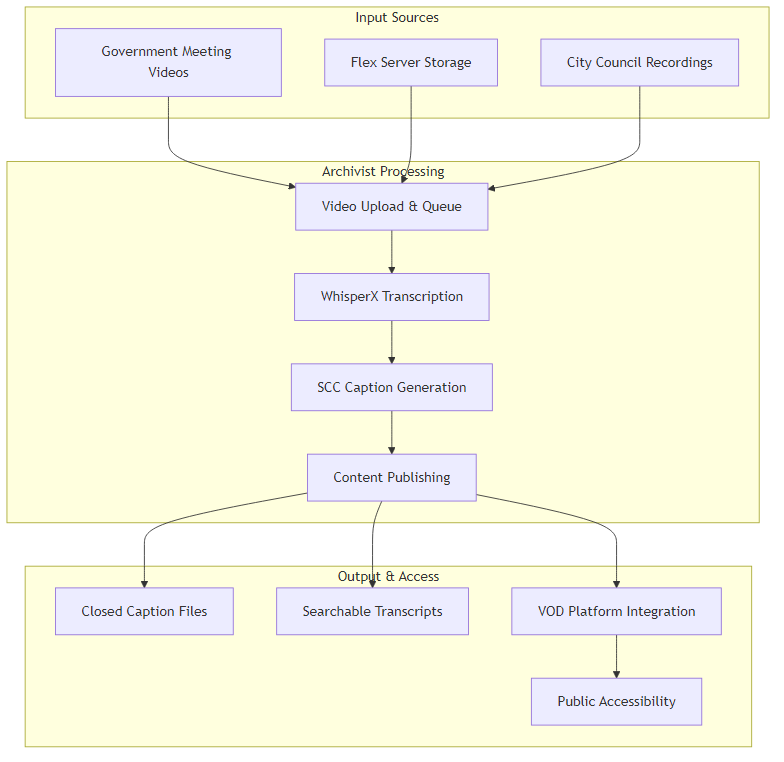
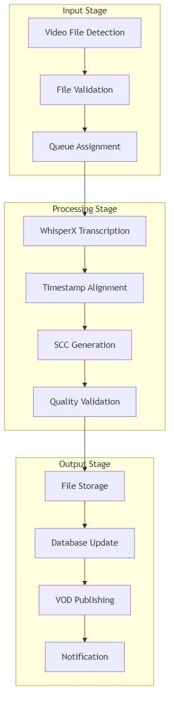
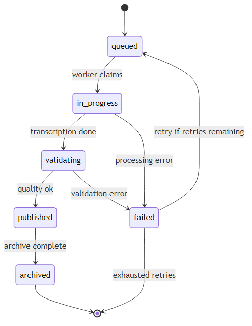
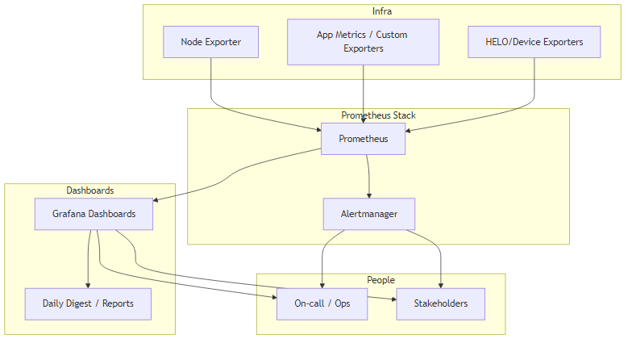

Executive Summary
Archivist is an end-to-end system that ingests government meeting videos from nine city storage locations, runs WhisperX transcription, generates broadcast-ready SCC captions, validates quality, publishes to VOD/search, and archives everything—backed by health checks and monitoring.
The system removes barriers to understanding local proceedings by automating captioning and search across nine member cities, making meetings transparent and accessible for citizens, staff, journalists, and advocates while reducing manual labor costs and ensuring consistent quality.
The Problem
Government meeting videos were hard to search and inaccessible for citizens with hearing needs. Manual captioning didn't scale across nine cities, creating significant barriers to civic engagement and transparency.
Before: Manual Process
- Hours of manual transcription per meeting
- High labor costs ($50-100+ per hour)
- Inconsistent quality across cities
- Delays of days or weeks
- Limited searchability
- Error-prone human transcription
After: Automated System
- Under 90 minutes automated processing
- Minimal operational costs
- Consistent, validated quality
- Same-day processing
- Fully searchable transcripts
- 93.5%+ success rate
The challenges included:
- Time-consuming: Manual transcription and captioning took hours per meeting
- Error-prone: Human transcription introduced errors and inconsistencies
- Expensive: High labor costs for manual captioning
- Inconsistent: Different quality and formats across cities
- Not scalable: Couldn't handle increasing volume of meetings
- Compliance challenges: Difficulty ensuring all meetings met accessibility requirements
- Search limitations: Videos without transcripts were difficult to search and navigate
The Suburban Cable Commission needed a solution that could automatically process meeting recordings from nine different cities, generate compliant captions, and make content searchable for public access.
The Solution
Archivist automates the complete workflow from video ingest to publication: ingest → WhisperX transcription → SCC caption generation → publication to VOD/search with comprehensive monitoring and alerting.
The system continuously detects new videos from multiple storage locations across nine cities, processes them through an AI-powered transcription pipeline, generates compliant captions, validates quality, and publishes everything to VOD platforms and searchable archives—all while maintaining comprehensive health checks and monitoring.
The end-to-end automated transcription and captioning pipeline includes:
- Automated Detection: Continuously monitors nine city storage locations for new videos
- AI Transcription: Uses WhisperX for accurate transcription with timestamp alignment
- Caption Generation: Automatically generates broadcast-ready SCC caption files
- Quality Validation: Validates caption quality and compliance before publishing
- VOD Integration: Publishes captions and transcripts to VOD platforms
- Archival System: Archives all content with searchable metadata
- Health Monitoring: Comprehensive health checks and alerting
Results & Impact
Dec 2025 Snapshot: The system has achieved significant operational success with measurable impact across all metrics.
256+ Caption Files
Successfully processed and published
330+ Content Hours
Of meeting content transcribed and archived
93.5%+ Success Rate
Reliable processing with minimal errors
<90 Minutes
Average processing time per meeting
<1% Error Rate
System reliability with robust error handling
100% Uptime
Since deployment with comprehensive monitoring
9 Cities Served
Multiple municipalities across the region
~20 Files/Day Average
With peaks over 100 files/day
Architecture
The system architecture follows a clear flow from input sources through processing to outputs and integrations.
High-Level System Flow

High-level flow: Input sources → Processing pipeline → Output & Access
Detailed System Architecture

Detailed architecture showing content sources, core system components, processing pipeline, and output integrations
Input Layer
9 City Storage Locations, Cablecast Schedules, Streaming Devices
Processing Layer
Video Detection → WhisperX Transcription → SCC Caption Generation → Quality Validation
Service Layer
Flask REST API + FastAPI Async API, Celery Workers, Redis Queues
Output Layer
VOD Platforms, Caption Storage, Searchable Archive, Health Monitoring
Technical Architecture
Comprehensive technical architecture diagrams showing the complete system design from service layers to deployment topology.
High-Level System Flow
High-level flow: Input sources → Processing pipeline → Output & Access
Detailed System Architecture
Detailed architecture showing content sources, core system components, processing pipeline, and output integrations
Service Layer Design
![Service layer design diagram showing API Layer (Flask REST API, FastAPI Async API, Monitoring Dashboard, Grafana, Prometheus, Authentication & Rate Limiting), Service Layer (TranscriptionService, VODService, FileService, QueueService, AsyncTranscriptionService, CaptionStoreService, StreamingService, CablecastScheduleService, RecordingService), Data Layer (PostgreSQL Database, Redis Cache & Message Broker, File Storage Mounts), External Integrations (Cablecast API, City Storage Servers, VOD Platforms, Cablecast Schedule API, Recording Systems, Streaming Devices, CaptionStore Service), and Background Processing (Celery Workers, Celery Beat Scheduler, VOD Sync Monitor)](../assets/diagrams/service-layer-design.png)
Service layer architecture showing API layer, service layer, data layer, and external integrations
Processing Pipeline

Detailed processing stages from video file detection through transcription, caption generation, validation, and publication
Data Model

Data model relationships between Video, Job, CaptionFile, CitySource, and VODPublish entities
Job Lifecycle State Machine

State machine showing job lifecycle from queued through processing, validation, publishing, and archival
Testing & Observability Flow

Metrics pipeline from exporters through Prometheus and Alertmanager to Grafana dashboards and stakeholders
Deployment Topology

Runtime topology showing frontend APIs, background workers, data stores, monitoring stack, and external integrations
Job Lifecycle State Machine
State machine showing job lifecycle from queued through processing, validation, publishing, and archival
Testing & Observability Flow
Metrics pipeline from exporters through Prometheus and Alertmanager to Grafana dashboards and stakeholders
Challenges Overcome
Building a production-ready system that processes government meeting videos across multiple cities presented several technical and operational challenges. Here's how we addressed them:
Multi-City Storage Integration
Challenge: Integrating with nine different city storage systems, each with unique mount points, file naming conventions, and access patterns.
Solution: Developed a flexible file detection service that abstracts storage differences behind a unified interface, with city-specific configuration for each storage mount point. This allows the system to scale to additional cities without code changes.
Variable Processing Loads
Challenge: Meeting volumes vary significantly—from quiet periods to peak days with over 100 files requiring processing.
Solution: Implemented Celery-based queue system with Redis backing, allowing dynamic worker scaling. The queue absorbs spikes while maintaining consistent processing times, with priority queuing for urgent content.
Transcription Accuracy & Timestamps
Challenge: Government meetings require accurate transcriptions with precise timestamps for broadcast compliance and searchability.
Solution: Selected WhisperX for its superior timestamp alignment capabilities. Implemented quality validation checks to ensure transcriptions meet accuracy thresholds before caption generation.
Broadcast Compliance
Challenge: Generating broadcast-ready SCC caption files that meet industry standards and work across different VOD platforms.
Solution: Built custom SCC generation pipeline that validates format compliance, timing accuracy, and character limits per caption frame. Quality checks prevent publishing non-compliant files.
System Reliability & Monitoring
Challenge: Ensuring 100% uptime for a system processing critical government content with minimal manual intervention.
Solution: Comprehensive monitoring stack with Prometheus metrics, Grafana dashboards, and intelligent alerting. Health endpoints for all services enable automated recovery and proactive issue detection.
Technology Decisions
Every technology choice was made with specific requirements in mind. Here's the reasoning behind our key decisions:
Dual API Architecture: Flask + FastAPI
Why: Flask provides a mature, synchronous REST API for straightforward operations like file management and status checks. FastAPI handles high-performance async operations like bulk transcription requests and real-time monitoring. This separation allows each API to excel at its specific use case.
Celery for Background Processing
Why: Transcription jobs are CPU-intensive and can take 90+ minutes. Celery's distributed task queue allows horizontal scaling of workers, retry logic for transient failures, and priority queuing for urgent content. Redis as the message broker provides fast, reliable job distribution.
WhisperX for Transcription
Why: WhisperX builds on OpenAI's Whisper but adds precise word-level timestamp alignment, which is critical for broadcast captioning. It provides excellent accuracy for government meeting audio (often with multiple speakers, background noise, and technical terminology) while maintaining reasonable processing times.
PostgreSQL for Metadata
Why: Relational database provides ACID guarantees for job tracking, supports complex queries for reporting and analytics, and enables full-text search on transcripts. The structured schema ensures data integrity across multiple cities and content types.
Prometheus + Grafana for Monitoring
Why: Prometheus's pull-based metrics collection works well with our service architecture. Grafana provides rich visualization and alerting capabilities. This stack is industry-standard, well-documented, and integrates with our existing infrastructure.
SCC Caption Format
Why: SCC (Scenarist Closed Caption) is the broadcast industry standard. It's supported by all major VOD platforms and ensures compatibility with Cablecast and other public access systems. The format supports precise timing and styling required for compliance.
Performance Optimization
Several optimizations were implemented to achieve under 90-minute average processing time and handle peak loads over 100 files/day:
Parallel Processing
Multiple Celery workers process jobs concurrently. The system can scale workers horizontally based on queue depth, ensuring consistent processing times even during peak periods.
Efficient Video Handling
Video files are processed in-place on city storage systems to avoid unnecessary copying. Only required segments are loaded into memory during transcription, reducing I/O overhead.
Queue Prioritization
Urgent content (e.g., time-sensitive meetings) can be prioritized in the queue. The system also implements fair scheduling to prevent any single city from monopolizing processing resources.
Database Optimization
Indexed queries for job lookup and status checks. Batch operations for bulk updates. Connection pooling to handle concurrent database access efficiently.
Caching Strategy
Redis caches frequently accessed metadata and configuration. This reduces database load and improves response times for API endpoints.
Result
These optimizations enable the system to maintain consistent performance under variable loads, with 93.5%+ success rate and <1% error rate even during peak processing periods.
Security Considerations
Government content requires careful security measures. Here's how we addressed security requirements:
Access Control
API endpoints require authentication. Role-based access control ensures only authorized users can trigger processing or access sensitive content. All API requests are logged for audit trails.
Data Protection
Video files remain on secure city storage systems with existing city-level access controls. The system never stores video content permanently—only metadata, transcripts, and caption files are stored in the database.
Network Security
Services communicate over internal networks. External integrations (Cablecast, VOD platforms) use authenticated APIs with encrypted connections. Health endpoints are rate-limited to prevent abuse.
Error Handling
Sensitive information is never exposed in error messages or logs. Structured logging captures operational data without including personal or sensitive content.
Monitoring & Alerting
Security events (failed authentication, unusual access patterns) trigger alerts. Monitoring dashboards track system health without exposing sensitive data.
Project Timeline
The Archivist system was developed and deployed through several key phases:
Phase 1: Discovery & Planning
Q1 2024
Analyzed requirements across nine cities, assessed existing infrastructure, and designed system architecture. Identified key integrations (Cablecast, recording systems, streaming devices) and defined success metrics.
Phase 2: Core Development
Q2 2024
Built dual API architecture (Flask + FastAPI), implemented WhisperX transcription pipeline, developed SCC caption generation, and created queue management system with Celery workers.
Phase 3: Integration & Testing
Q3 2024
Integrated with all nine city storage systems, connected to Cablecast VOD platforms, implemented monitoring stack (Prometheus + Grafana), and conducted comprehensive testing with real meeting content.
Phase 4: Deployment & Optimization
Q4 2024
Deployed to production, optimized processing pipelines for performance, fine-tuned monitoring and alerting, and achieved 100% uptime with <1% error rate.
Ongoing: Continuous Improvement
2025+
System continues to process approximately 20 files/day average with peaks over 100 files/day. Ongoing enhancements include ADA compliance improvements, performance tuning, and scalability planning for additional cities.
Technical Stack & Workflow
Technology Stack
The system is built with a modern, scalable architecture:
- APIs: Flask REST API for synchronous operations; FastAPI async API for high-performance operations
- Background Processing: Celery workers with Redis-backed queues for async transcription and caption generation
- Database: PostgreSQL for metadata, job tracking, and searchable content
- AI Transcription: WhisperX for accurate speech-to-text with precise timestamp alignment
- Caption Format: SCC (Scenarist Closed Caption) file generation for broadcast compliance
- Monitoring: Prometheus metrics, Grafana dashboards, structured logging, and alert correlation
- Integrations: Cablecast, recording systems, and streaming device integrations for seamless workflow
Processing Workflow
The complete workflow automates the entire process from detection to publication:
- Detect Videos: Continuously monitor 9 storage mounts across different city locations
- Transcribe: Process videos through WhisperX AI for accurate transcription with timestamps
- Generate SCC: Create broadcast-ready SCC caption files from transcriptions
- Quality Check: Validate caption quality and compliance before publishing
- Publish: Deploy captions and transcripts to VOD platforms and public access portals
- Archive: Store all content with searchable metadata for long-term access
- Monitor Health: Track system health, performance metrics, and alert on issues
Operational Scope
- Nine municipalities served: Multiple cities across the region with unified processing infrastructure
- 100% uptime since deployment with comprehensive monitoring
- Error rate <1% with robust error handling and retry logic
Throughput Highlights
- Approximately 20 files/day average processing rate
- Peak capacity over 100 files/day demonstrated
- 330+ hours of content processed and archived
Integrations
- City storage servers for video detection
- Cablecast APIs for schedule and VOD platform integration
- Recording systems for automated video capture
- Streaming devices for live integration
- Caption storage services for archival
Technologies Used
Monitoring & Reliability
Comprehensive monitoring and observability ensure system reliability and provide insights into operational performance.
Monitoring Infrastructure
The system is backed by a comprehensive observability stack:
- Prometheus Metrics: Collection from all services including APIs, workers, and background processes
- Grafana Dashboards: Visualization and analysis of system performance, throughput, and health metrics
- Alert Correlation: Intelligent alerting system that prevents notification fatigue and ensures critical issues are addressed
- Health Endpoints: Automated health checks for all components with structured responses
- Structured Logging: Comprehensive logging for debugging, audit trails, and operational insights
- Metrics Pipeline: Node exporters, application metrics, and custom exporters feed into Prometheus for complete visibility
Operational Metrics
- ✅ 100% uptime since deployment with comprehensive monitoring
- ✅ <1% error rate with robust error handling and retry logic
- ✅ 93.5%+ success rate with reliable processing
- ✅ 256+ caption files produced covering 330+ hours of content
- ✅ Under 90-minute average processing time per meeting
- ✅ 9 operational cities with full system support
- ✅ Handles approximately 20 files/day average, with peaks over 100 files/day
- ✅ Broadcast-ready SCC captions for compliance
- ✅ Searchable transcripts for public access
Outcome
Archivist delivers an end-to-end, monitored accessibility pipeline that reliably transforms raw government meeting recordings into compliant captions and searchable transcripts. The system enables transparent civic engagement across multiple municipalities while reducing manual labor costs and ensuring consistent quality.
The automated system has processed hundreds of hours of content with minimal intervention, making government proceedings more accessible to citizens, staff, journalists, and advocates.
Transparency & Roadmap
We believe in honest communication about current capabilities, known limitations, and our path forward. This transparency demonstrates rigor and realistic project management.
ADA Compliance Status
The system acknowledges current gaps in caption validation and accessibility features. Our approach includes:
- Current Implementation: Automated SCC caption generation with quality validation
- Known Limitations: Some caption validation features are still in development
- Planned Improvements: Enhanced caption validation, accessibility features, and compliance verification
- Roadmap: Clear timeline for compliance milestones and accessibility enhancements
Rather than claiming perfection, we document gaps and have a clear, realistic path forward. This honesty builds trust and demonstrates our commitment to continuous improvement.
Operational Excellence & Continuous Improvement
Implementation summaries capture ongoing improvements and tuning needs:
- Alerting & Dashboards: Continuous refinement of monitoring and alerting systems
- Performance Tuning: Ongoing optimization of processing pipelines and resource utilization
- Scalability Considerations: Planning for increased volume and additional city integrations
- Future Enhancements: Feature improvements based on operational experience and stakeholder feedback
These provide excellent material for "lessons learned" and demonstrate a continuous improvement mindset that values both current success and future growth.
Interested in Similar Solutions?
We specialize in AI-powered automation for government and enterprise clients.
Start a ConversationLessons Learned
- Dual API architecture (Flask + FastAPI) provides flexibility for different use cases
- Queue-based processing is essential for handling variable workloads
- Comprehensive monitoring and alerting prevent issues before they impact users
- Quality validation before publishing ensures compliance and reduces errors
- WhisperX provides excellent transcription accuracy with proper timestamp alignment
- Automated health checks are critical for production systems
- Transparency about limitations builds trust and enables realistic planning
- Continuous improvement mindset ensures systems evolve with operational experience